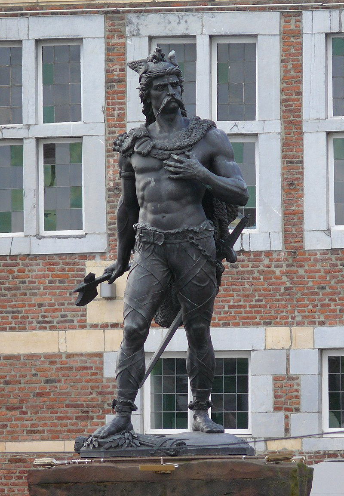

Toeristische attracties
Ambiorix
De beroemste (beruchtste?) inwoner van Tongeren kreeg de meest prominente plek in de stad. Het imposante bronzen beeld van Eburonenkoning Ambiorix uit 1866 eert de memorabele overwinning op de Romeinen in 54 v.C. Niet voor niets noemde Julius Caesar de Belgen de dappersten aller Galliërs. Ambiorix poseert in Germaanse klederdracht, met een strijdbijl als weapon of choice en een drakenhelm. Zijn voeten vertrappelen de wapens van de verslagen Romeinse tegenstanders. De omheining van het standbeeld bestaat uit speren, everzwijnenhoofden en pijlen, helemaal in stijl met de Keltische tradities.
De Romeinse muur
 De eerste stenen Romeinse omwalling van Tongeren werd gebouwd tijdens het keizerschap van Trajanus aan het begin van de 2e eeuw. Deze omwalling had een lengte van 4544 m, een dikte van 2,10 m en werd langs de buitenzijde beschermd door één tot drie V-vormige verdedigingsgrachten. Het is opvallend dat de omwalling van Tongeren ruim 500 m langer was dan de omwalling van Colonia Claudia Ara Agrippinensium, de hoofdplaats van de provincie Germania Inferior waartoe ook Tongeren behoorde.
De eerste stenen Romeinse omwalling van Tongeren werd gebouwd tijdens het keizerschap van Trajanus aan het begin van de 2e eeuw. Deze omwalling had een lengte van 4544 m, een dikte van 2,10 m en werd langs de buitenzijde beschermd door één tot drie V-vormige verdedigingsgrachten. Het is opvallend dat de omwalling van Tongeren ruim 500 m langer was dan de omwalling van Colonia Claudia Ara Agrippinensium, de hoofdplaats van de provincie Germania Inferior waartoe ook Tongeren behoorde.